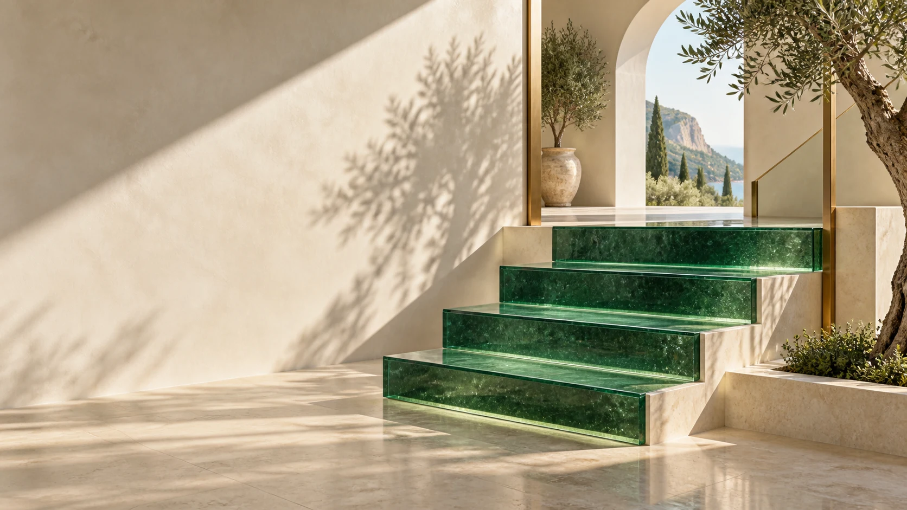

REDVITALIA · CAPTACIÓN B2B01 / REDVITALIA / B2B
Captar despachos
La página comercial de la agencia. Diagnóstico, método y contacto por WhatsApp o llamada.
De la primera llamada a la campaña. La propuesta, las páginas y los recursos para poner en marcha la captación de abogados.

REDVITALIA · CAPTACIÓN B2BLa página comercial de la agencia. Diagnóstico, método y contacto por WhatsApp o llamada.
Filtro inicial, respuesta y trazabilidad hasta expediente aceptado.
Clasificar la necesidad y preparar una consulta útil desde el principio.
Primera conversación discreta, encaje por servicio y claridad sobre el siguiente paso.
Imágenes listas para descargar, textos para copiar y enlaces identificados por campaña. Elige un enfoque y empieza con una prueba controlada.
Abrir los anuncios ↗Una especialidad, una zona y capacidad para atender.
Definir el plan ↗Llamada breve, diagnóstico y correo solicitado.
Abrir los guiones ↗Alcance, costes y condiciones por escrito.
Ver la propuesta ↗Anuncio, página y seguimiento de cada oportunidad.
Preparar la medición ↗Los modelos jurídicos necesitan la identidad, condiciones y canales del despacho antes de captar clientes. RedVitalia ofrece marketing; no presta asesoramiento jurídico.